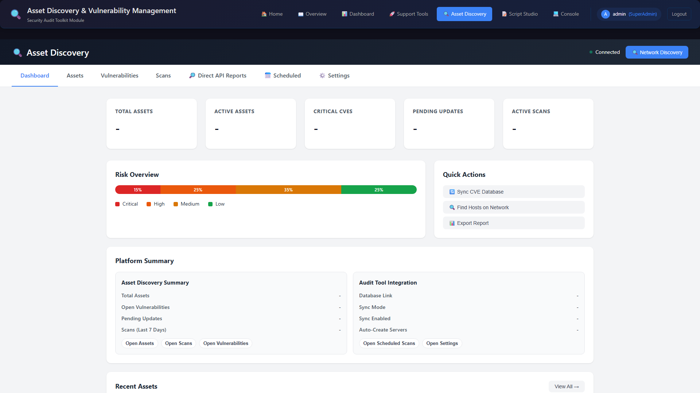
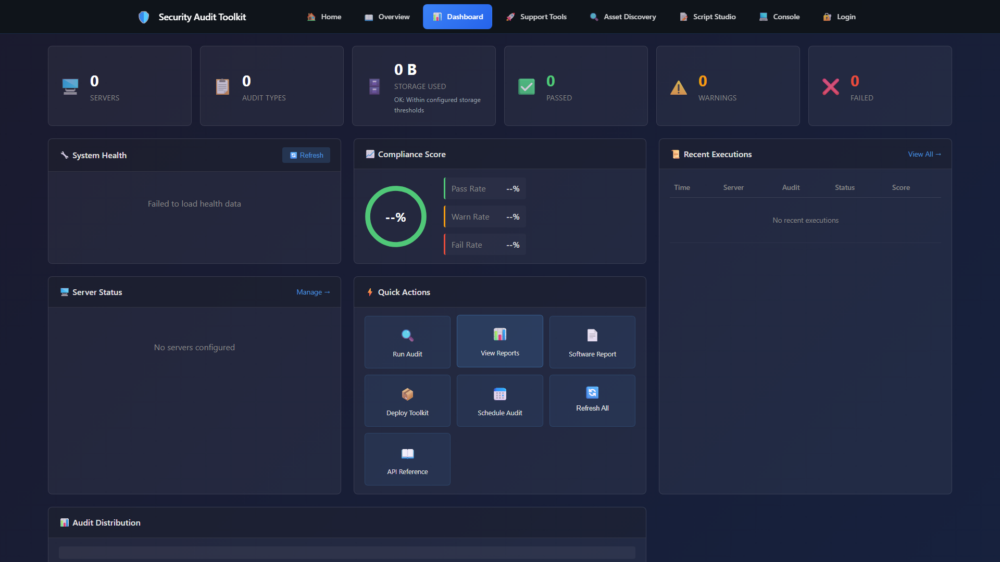
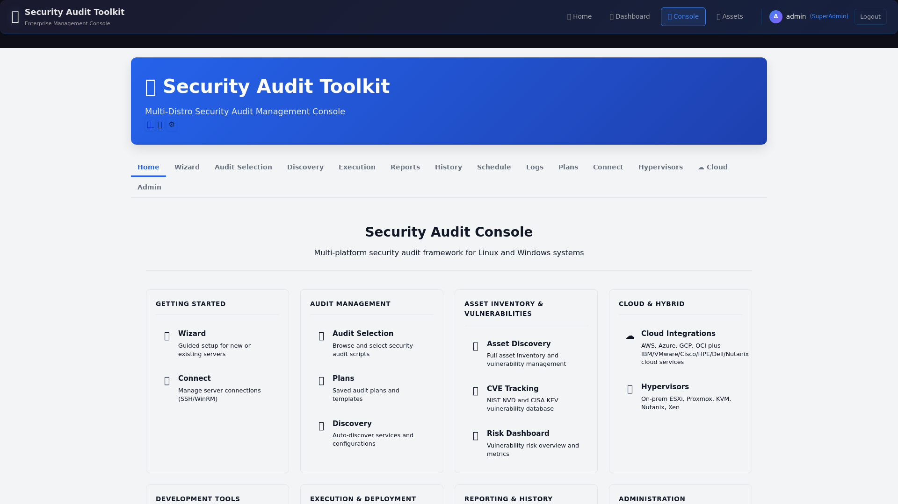

Screenshots
See the platform in action
Preview-only screenshots. No downloads or commercial checkout links are present on this site.






Preview screenshots only — no installers or release binaries are hosted on this site. Commercial licensing and Stripe checkout are available for the Audit Admin Toolkit via the Licensing & Pricing page.